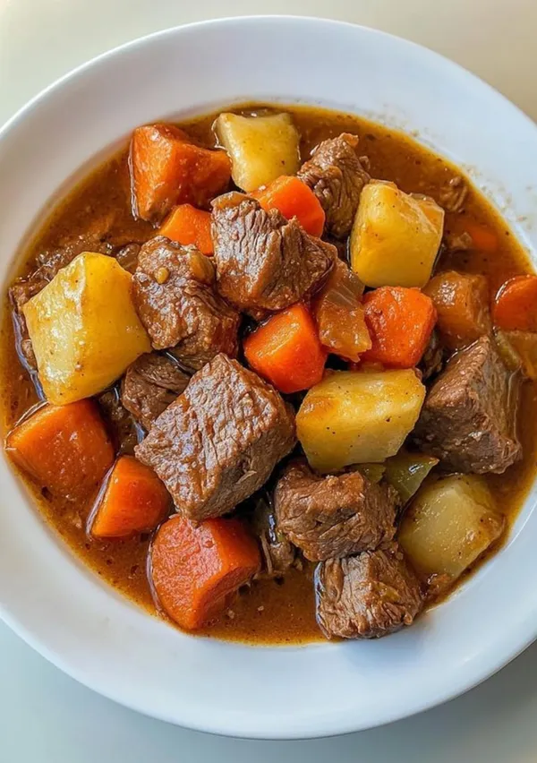

Beef Stew

Description
Beef stew has nutritional value for the body - builds muscle fast and increases the muscle fibers. it really makes my dish very appetizing and more enjoyable especially with Ugali.
Ingridients
- 500 g Beef (cow meet)
- 1 large Onion
- 2 tbsp Cooking oil
- 3/4 Tomatoes
- 1 medium Capsicum (bell pepper)
- 2 cloves Garlic
- 3 medium Potatoes
- 3 medium Carrots
- to taste Salt
- 1 tbsp Soy sauce
- 1 tsp Curry power or paprika or black pepper
Steps
- Cut beef into bite-sized pieces. Chop all vegetables
- Heat oil in a pot, fry beedf until browned
- Add onions and garlic, saute until soft
- Add tomatoes and capsium, cook until tomatoes break down
- Stir in carrots and potatoes
- Season with salt, soy sauce, and your chosen spice.
- Add enough water to cover ingredients. bring to boil.
- Lower head, cover, and simmer for about 45-60 minutes until meat and veggies are tender
- Serve hot with ugali or rice.